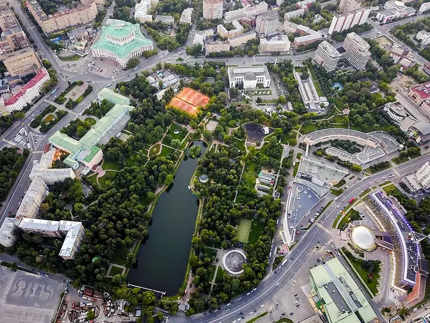

Фото: Gordon01, CC0 · Wikimedia Commons
Парк · ЦАО
Екатерининский парк
Тихий парк у Театра Армии: большой пруд, тенистые аллеи и скамейки у воды — хорошо, чтобы спокойно поговорить.
- ₽ · до 1 500 ₽ на человека
- в 1 плане
Позвать сюда: Екатерининский паркОткрыть в каталоге: Екатерининский паркМаршрут до места: Екатерининский парк
Адрес и детали
- Адрес
- Большая Екатерининская ул.
Открыть на Яндекс Картах (в новой вкладке) - Метро
- м. Достоевская
- Округ
- Центр (ЦАО)
- Цена
- до 1 500 ₽ на человека
- Часы работы
- ср, пт, сб 05:30–00:25 · проверили в октябре 2026
Планы с этим местом 1
- Екатерининский парк · Парк · м. Достоевская
- 7 минут пешкомВ темноте?! · Ресторан
Неспешный круг у пруда в Екатерининском парке, а через семь минут пешком — ужин в полной темноте под живую музыку: необычно и сближает. Столик — только по записи.
Открыть план: Ужин в полной темнотеПозвать сюда: Ужин в полной темноте
Фото: Gordon01, CC0 · Wikimedia Commons

Похожие рядом


Что ещё рядом


Как позвать
- Выбери план, место или событие — в карточке адрес, цены и маршрут в Яндекс Картах.
- Нажми «Позвать сюда» — соберётся приглашение-игра для свидания или голосование для компании.
- Отправь ссылку в любой мессенджер: тебе ответят, а компания отметит, куда и когда может. Бесплатно и без регистрации.